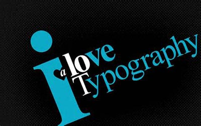

Webbtypografi
Den som vid sidan av arbetet med datorn utvecklar sitt seende och sin skarpsynthet genom att teckna, hon eller han kan bli den webb-designer som konstnärligt sett skiljer sig från mängden. Den som ser det andra inte har sett. Och om jag idag var 17 år, och en dag hoppades på att kunna försörja mig genom att arbeta med webb-design, så skulle jag gå i Karl-Erik Forsbergs fotspår. Jag skulle läsa allt jag kom över om typografi, jag skulle skaffa mig kalligrafiska redskap och hänge mig åt hantverket trots, eller just därför, att det är med datorer jag skall arbeta." HC Ericson, professor grafisk design Mittuniversitetet

Bildtext